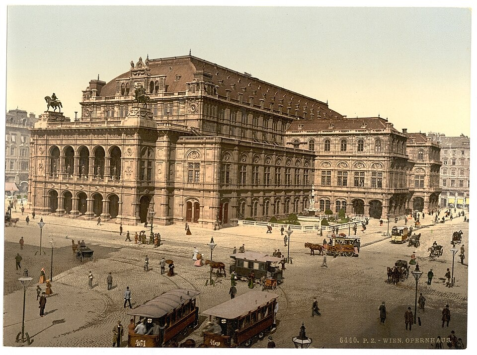
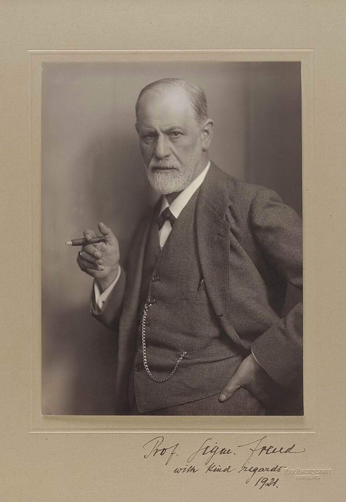
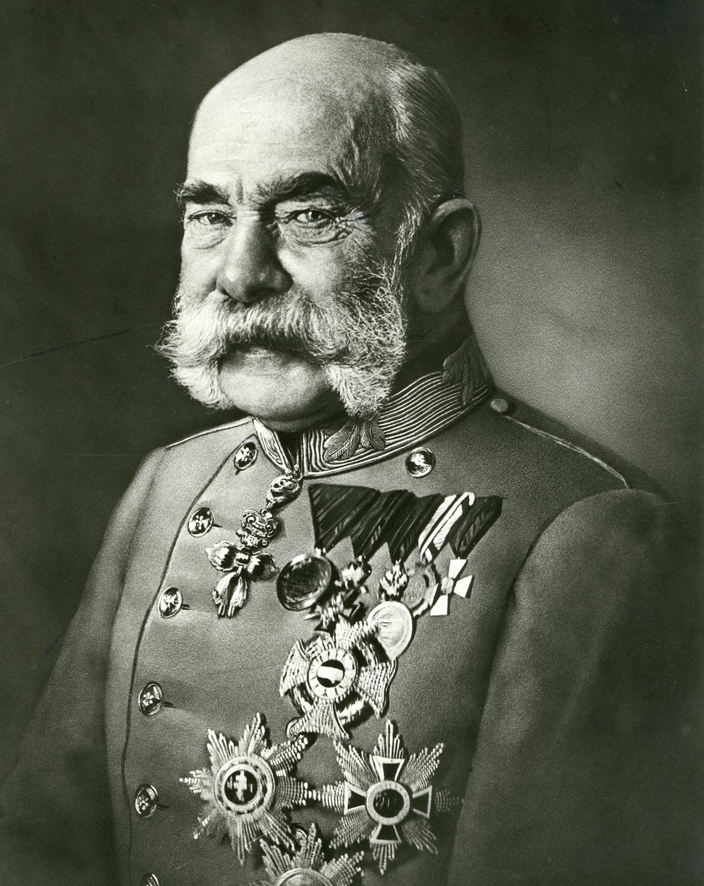
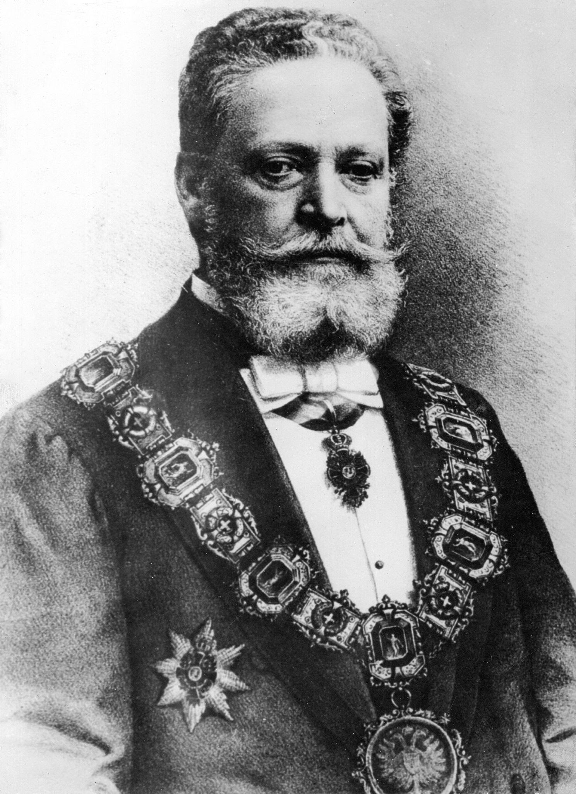
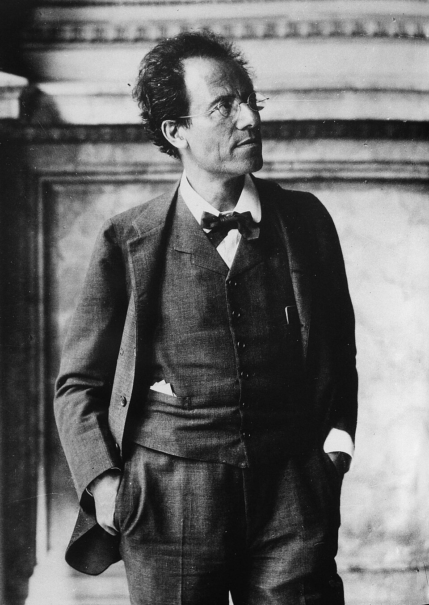
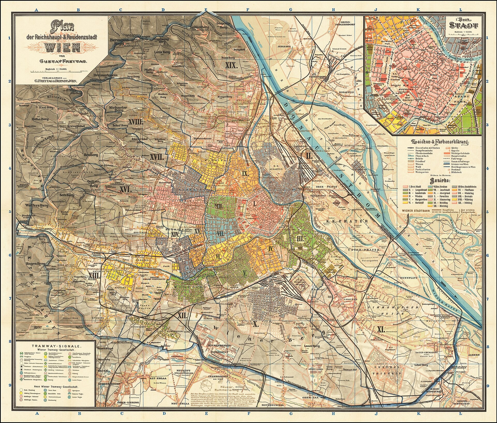

馬克斯・利伯曼
Max Liebermann猶太裔年輕醫師，關注恐懼、記憶與動機。他的心理推想仍須經現場調查來檢驗。
1906–1909 · IMPERIAL VIENNA
Vienna Blood
從一宗靈媒命案開始，刑警與年輕醫師穿越歌劇院、軍校、診間與貧民街區；帝國首都的藝術、精神醫學與政治，也同時進入視野。
開始閱讀
案件、精神醫學與維也納
1906 年，一名年輕靈媒在維也納離奇死亡。刑警奧斯卡・萊因哈特負責查案，旁聽問案的醫師馬克斯・利伯曼則想弄清楚，目擊者為何深信自己看見了超自然現象。兩人從軍校、旅館與貧民街區一路查到政府內部；馬勒的歌劇院、《魔笛》與克林姆的壁畫，也成為理解案件與時代的線索。
劇情與人物
馬克斯想近距離理解人的行為；奧斯卡必須確認現場究竟發生什麼，以及證人的說法能否相互印證。影集由史蒂夫・湯普森改編自法蘭克・塔利斯的小說。
猶太裔年輕醫師，關注恐懼、記憶與動機。他的心理推想仍須經現場調查來檢驗。

維也納刑警督察，重視證詞、時間順序、物證與司法程序。

馬克斯的未婚妻，後來投入新聞工作，以採訪接觸城市另一面。

博物館研究員，科學知識使她在案件中提供不同的觀察。
第一季 · 1906–07 靈媒命案、牽涉民族主義的〈夜后〉，以及軍校中的家族案件。
第二季 · 1907 起 匈牙利伯爵夫人在旅館死亡；案件走入貧民街區與修道院。
第三季 · 1908 時裝店女工、退伍軍人和默片首映，描繪不同的都市生活。
第四季 · 1909 軍火商、高階官員與代號「梅菲斯特」的內應，合為一宗跨全季案件。


醫學與警察
佛洛伊德 1885 年取得神經病理學授課資格，1902 年獲授副教授頭銜。他在 Berggasse 19 與同道聚會，這個圈子於 1908 年發展為維也納精神分析學會。影集裡的馬克斯是虛構的佛洛伊德門生，片中對夢、記憶與未說出口念頭的關注，對應私人診間以談話與自由聯想為核心的做法。
1907 年新開的施泰因霍夫院區有 34 棟病房、約 2,200 張床，呈現大型院區的住院照護；診所的個別談話則是另一種理解病人的方式。
馬克斯的推測指向新的問題，再由奧斯卡找證據。維也納警察 1870 年已正式使用攝影辨識，1902 年引入指紋辨識；精神分析被放進日益倚重物證的辦案環境，形成兩人的分工。
政治


1907 年，奧地利部分實施帝國議會下院的普遍、平等男性選舉權；女性當時仍沒有同等投票權。盧格爾主政時，反猶太主義不只是私人偏見，也被用於公開政治動員，影響家庭、工作與社交。
1908 年帝國宣布併吞波士尼亞與赫塞哥維納，引發塞爾維亞反彈並牽動列強。第四季的案件是虛構，但放在這個日益緊張的外交環境中更容易理解。
維也納分離派 · 1897
克林姆與一群藝術家從保守的藝術家協會中另起爐灶，讓繪畫、建築、設計與展覽空間彼此呼應。金色、花紋與幾何不只是裝飾，也成為理解現代生活的語言。
《貝多芬壁畫》為 1902 年分離派貝多芬展創作，取材自《第九號交響曲》及華格納的詮釋。它在 1903 年售出並拆下，1986 年才回到原展館長期展出。

劇中的音樂
原伴奏者生病，宮廷歌劇院院長馬勒被請來代奏。馬勒的院長身分符合歷史，代奏則是劇中情節，並借此寫社交場合的排斥。
《魔笛》中的大蛇、侍女與捕鳥人帕帕蓋諾，讓馬克斯把原先分開的事件放進同一順序理解，形成可追問的查案假設。
第四季首集英文片名是 Mephisto Waltz；劇中「梅菲斯特」是內應代號。原創配樂由 Roman Kariolou 作曲。

馬勒 1897–1907 年主持宮廷歌劇院。
理查・史特勞斯《莎樂美》1905 年首演，宮廷歌劇院也受審查影響。
法蘭茲・雷哈爾《風流寡婦》1905 年在維也納河畔劇院首演。
荀貝格、貝爾格與魏本 1908 年《第二號弦樂四重奏》首演引發爭論。
歷史時間軸
故事集中在 1906–1909 年，但街道、醫院、警察制度與音樂，來自此前數十年的變化。
1857 拆除舊城牆
1865 環城大道開通
1897 分離派成立
1898 分離派展館落成
1910 盧斯大樓落成
1867 奧匈妥協
1873 維也納股市崩盤
1897 盧格爾任市長
1907 男性普選
1908 波士尼亞危機
1914 一戰爆發
1886 佛洛伊德開診所
1895《歇斯底里研究》
1900《夢的解析》
1902 心理學討論會
1907 施泰因霍夫啟用
1870 音樂之友協會大樓
1897 馬勒接掌歌劇院
1905《風流寡婦》首演
1908 荀貝格四重奏
1911 馬勒逝世
城市與地圖
1857 年，法蘭茲・約瑟夫一世下令拆除舊城防禦工事；1865 年環城大道正式開通。1906 年第一宗案件發生時，大道已開通 41 年，沿線的歌劇院、國會、市政廳與大學多已啟用。

1869 年宮廷歌劇院開幕；1883 年帝國議會與市政廳啟用；1884 年維也納大學主樓啟用；1888–91 年城堡劇院、自然史與藝術史博物館先後開幕。
第四季取景的施泰因霍夫在市中心以西約七公里。它與佛洛伊德診所，是理解醫療史的兩個起點：一邊是小診所，另一邊是大型院區。
先找被環城大道圍繞的第一區，再越過多瑙運河找第二區利奧波德城；第一季開場命案就在第二區。
English Conversation Guide
討論影視改編少了敘述者後，鏡頭如何讓觀眾發現線索。Vocabulary: screen adaptation, plant a clue, red herring, piece together what happened.
Max 的推論是下一個問題，而非證據。Vocabulary: psychiatry, psychoanalysis, free association, inpatient care, corroborate an account, rule out an explanation.
從 State Opera 沿 Ringstrasse 前往 Parliament，再轉入 Spittelberg；或從 University of Vienna 向北到 Berggasse 19。Vocabulary: head north, turn west, give way to, be set in, be filmed at.
來源與延伸查閱
本頁以《維也納血案》圖文導覽為基礎：圖版來源包含美國國會圖書館、維也納市政府、OpenStreetMap、維也納分離派展館與公有領域歷史照片；歷史資料參照維也納旅遊局、維也納大學、奧地利國會、維也納警方、施泰因霍夫醫療史、荀貝格中心與馬勒相關資料；劇集資訊參照 PBS、ZDF、ORF 及第四季製作與取景報導。虛構情節與歷史資料分開閱讀，不把戲劇情節視為史實記錄。